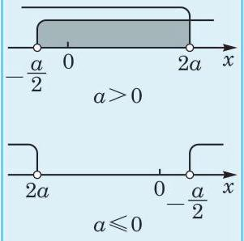
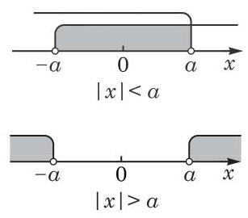

例题 1
例 1 设 为实数，求关于 的不等式 的解集.
学生阅读版 / 沪教版高中数学
必修第一册
第2章等式与不等式 · 保留教材主线与原题
教材与正式教参整合
解方程时, 往往要先将原先比较复杂的方程变形化为较简单的方程, 再通过解这个比较简单的方程来求出原方程的解. 同理, 解不等式时, 常常要通过等价变形, 将原不等式化为较简单的不等式或不等式组, 从而求得原不等式的解集.
1
例 1 设 为实数，求关于 的不等式 的解集.
例 2 设 为实数，解关于 的一元一次不等式组
我们可以在数轴上表示例 2 中的不等式组的解集, 如图 2-2-1 所示.

图 2-2-1
在交通事故中, 交通管理部门往往通过测量肇事汽车的刹车距离来推断该车辆实施刹车前的行驶速度, 并作为断定司机在肇事前是否有超速违章行为的重要参考依据.
假设在某次交通事故中，测得肇事汽车的刹车距离大于 ,试推断该汽车在刹车前的车速是否超过该水泥道路上机动车的限速规定 . 在一般情况下,我们可以采用如下数学模型来描述该种型号的汽车在常规水泥路面上的刹车距离 (单位: ) 与刹车前的车速 (单位: ) 之间的关系:
因此，我们需要通过求解不等式 来判断 是否大于 . 这就是一个一元二次不等式的求解问题.
定义 设 为实数,且 ,形如
让我们先来看两个例子.
例 3 解不等式 .
例 4 解不等式 .
例 5 解不等式 .
(1) 的解集是___；
(2) 的解集是___.
(3) 的解集是___.
(1) ； (2) .
一元二次不等式的求解与相应的一元二次方程的求解紧密相关. 我们已经知道,当 时,如何求解不等式 . 那么,当 时, 情况又如何呢?
不失一般性，我们仍然只讨论 的情形.
先看两个简单的例子: 的解集为 ,而 的解集为 .
再看一般的情况,首先讨论 的情形. 这时,一元二次方程 有重根 . 由因式分解, 不等式 等价于 . 又由于 ,原不等式等价于 ,其解集为 . 相应地,不等式 等价于 ,其解集为 .
同理,不等式 等价于 ,其解集为 R; 而不等式 等价于 ,其解集为 .
其次讨论 的情形. 这时,一元二次方程 没有实根. 无法在实数范围内因式分解. 由配方法,不等式 等价于 ,称项并在不等式两边同时除以 ,可得 . 因为 ,所以上述不等式的解集为 . 相应地,不等式 等价于 ,其解集为 .
同理,不等式 等价于 ,其解集为 ; 而不等式 等价于 , 其解集为 .
上述结果可总结成下表:
表 2-2
| 解集为 | 解集为 | ||
| 解集为 | 解集为 | ||
| 解集为 | 解集为 | ||
| 解集为 | 解集为 | ||
例 6 解下列不等式:
(1) ；
(2) ；
(3) ；
(4) .
(1) ； (2) ；
(3) ； (4) ；
(5) ；
(6) .
(1) ； (2) ；
(3) ； (4) .
例 7 解不等式组
例 8 若关于 的不等式
的解集为 ,求实数 的取值范围.
例 9 已知一元二次不等式 的解集为 (1,2),求实数 的值以及不等式 的解集.
(1) (2)
下面，我们将利用一元一次不等式(组)和一元二次不等式 (组)的解法求解一些简单的含有分式的不等式.
例如,求解分式不等式 . 该不等式等价于分子和分母同号,即 或 这样,就可将分式不等式化为不等式组求解. 另外, 分子和分母同号也等价于 ,这也能将分式不等式化为整式不等式求解.
例 10 解不等式 .
例 11 解不等式 .
例 12 解不等式 .
例 13 某服装公司生产的衬衫每件定价 80 元，在某城市年销售 8 万件. 现该公司计划在该市招收代理商来销售衬衫，以降低管理和营销成本. 已知代理商要收取的代理费为总销售金额的 (即每 100 元销售额收取 元),为确保单件衬衫的利润保持不变,服装公司将每件衬衫的价格提高到 元,但提价后每年的销量会减少 0.62r 万件. 求 的取值范围,以确保代理商每年收取的代理费不少于 16 万元.
解下列不等式:
(1) ； (2) ；
(3) ； (4) ；
(5) ； (6) .
我们知道, 表示实数 在数轴上所对应的点到坐标原点的距离. 根据绝对值的定义和几何意义, 可以求解一些基本的含绝对值的不等式.

图 2-2-2
例如,当 时,不等式 ,从而 的解集为 或 ,从而 的解集为 (图 2-2-2).
例 14 解不等式 .
例 15 解不等式 .
例 16 解不等式 .
为去掉不等式中的绝对值符号, 先求出方程 的根,再用这个根 将实数轴划分为两个部分, 分段进行讨论.
例 17 解不等式 .
为去掉不等式中的两个绝对值符号, 先分别求出方程 及 的根, 再用这两个根 及 将实数轴划分为三个区间，分段进行讨论.
解下列不等式:
(1) ； (2) ；
(3) ； (4) .
(1) ；
(2)
(1) ，其中 ； (2) ，其中 ；
(3) ，其中 .
(1) ； (2) ；
(3) ； (4) .
(1) ； (2) ；
(3) ； (4) .
(1) ; (2) .
(1) ； (2) .
(1) ； (2) ；
(3) ； (4) .
(1) ； (2) ；
(3) ； (4) .
(1) (2)
(3)
(1) ； (2) ；
(3) ； (4) ；
(5) .
(1)正数； (2) 负数.
(1) ； (2) ；
(3) ； (4) .
(1) ；
(2) ；
(3) .
(1) ；
(2) ；
(3) .
(1) ；___ (2) .
(1) ； (2) ；
(3) ； (4) .